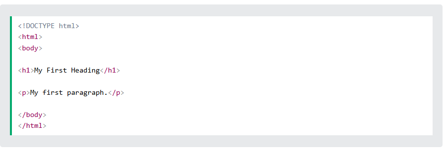

A simple text editor is all you need to learn HTML.
Web pages can be created and modified by using professional HTML editors.
However, for learning HTML we recommend a simple text editor like Notepad (PC) or TextEdit (Mac).
We believe that using a simple text editor is a good way to learn HTML.
Follow the steps below to create your first web page with Notepad or TextEdit.
Open the Start Screen (the window symbol at the bottom left on your screen). Type Notepad.
Open Start > Programs > Accessories > Notepad
Open Finder > Applications > TextEdit
Also change some preferences to get the application to save files correctly. In Preferences > Format > choose "Plain Text"
Then under "Open and Save", check the box that says "Display HTML files as HTML code instead of formatted text".
Then open a new document to place the code.
Write or copy the following HTML code into Notepad:

Save the file on your computer. Select File > Save as in the Notepad menu.
Name the file "index.htm" and set the encoding to >UTF-8 (which is the preferred encoding for HTML files).

With our free online editor, you can edit the HTML code and view the result in your browser.
It is the perfect tool when you want to test code fast. It also has color coding and the ability to save and share code with others: